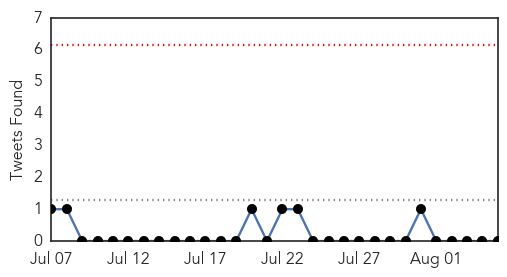
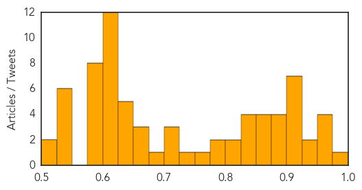

Hepatitis
30-Day Web Trend
30-Day Twitter Trend
1 alerts, 0 warnings

Article Locations


Article Confidences

Top Articles:
-
No articles found for Aug 05, 2015
Top Tweets:
-
No tweets found for Aug 05, 2015
Unknown
30-Day Web Trend
0 alerts, 0 warnings

30-Day Twitter Trend
0 alerts, 0 warnings

Article Locations


Article Confidences
Top Articles:
- 0.989
- A Belated Look at New York’s Cooling Towers, Prime Suspect in Legionnaires’ Outbreak
- 0.956
- Here's the truth behind the Legionnaires' disease outbreak everyone is panicking about
- 0.956
- 'We are taking this very seriously:' NYC health official on legionnaires' disease outbreak
- 0.955
- 7 dead, 86 infected as N.Y. identifies Legionnaires' source
- 0.953
- Raytown man dies of Legionnaire's Disease
- 0.938
- Deadly infections from medical scopes go unreported, raising health risks
- 0.938
- Deadly infections from medical scopes go unreported, raising health risks
- 0.917
- Chicago Tribune
- 0.917
- Chicago Tribune
- 0.917
- Chicago Tribune
- 0.917
- Chicago Tribune
- 0.917
- Chicago Tribune
- 0.917
- Chicago Tribune
- 0.904
- Experts: Why not call in CDC for help with disease outbreak?
- 0.894
- Experts say coordination key to stopping spread of drug-resistant infections
- 0.891
- Anxiety Runs High at Packed Legionnaires' Disease Meeting
- 0.881
- New plague death confirmed in Colorado
- 0.879
- Cilantro Recall 2015: 380 Sick Due to Human Waste-Contaminated Mexican Cilantro : Latinos Health News : Latinos Health
- 0.864
- Better Control of Drug-Resistant Germs Could Save Thousands of Lives: CDC
- 0.861
- FDA Bans Contaminated Mexican Cilantro after Cyclosporiasis Outbreak Infects 380 People
- 0.859
- Lack of cooperation hinders antibiotic resistance fight
- 0.855
- New York mayor vows to act to prevent Legionnaires’
- 0.849
- Death toll at seven in N.Y.'s largest Legionnaires outbreak; water deemed safe
- 0.846
- Vaccine With Virus-Like Nanoparticles Found to Be Effective Treatment
- 0.841
- Feces-contaminated cilantro could have sickened up to 384
- 0.833
- Headed To The Hospital, Protect Yourself From Deadly Infections
- 0.818
- De Blasio Pushes Legislation to Combat Legionnaires' Disease Outbreak
- 0.803
- FDA says investigating latest cyclosporiasis outbreak
- 0.798
- Legionnaire's Disease Outbreak in NYC
- 0.783
- Boulder Resident Tests Positive For Plague « CBS Denver
- 0.774
- Health Officials Scramble to Address Growing Concern over Antibiotic-resistant Bacteria
- 0.734
- Bronx Legionnaires' disease outbreak finally spurs action from NYC officials as 86 cases are confirmed
- 0.722
- Hendra virus vaccine for horses approved despite possible deaths
- 0.718
- Election talk bores viewer
- 0.700
- Hantavirus found in mouse at Agua Hedionda Lagoon
- 0.681
- Source of Buckhead Parasite Infection Discovered
- 0.669
- More plague detected in Pueblo County after person dies from the disease
- 0.665
- Outbreak of Legionnaires disease hits the Bronx
- 0.655
- Florida saltwater bacteria numbers grow, alarming swimmers
- 0.649
- Sorry, deze pagina kon niet gevonden worden.
- 0.641
- Can nurses wear uniforms in public places?
- 0.638
- Journalists attending SPJ banquet sickened by norovirus
- 0.637
- 86 cases of Legionnaires’ disease confirmed in South Bronx
- 0.635
- Inspection raids decrease by 70 percent
- 0.612
- US launches first drone strike from Turkey against IS group
- 0.612
- Trump, an unknown quantity in first Republican debate
- 0.612
- ‘Strong’ evidence links Bardo Museum, Tunisia hotel attacks
- 0.612
- Malaysian PM confirms plane debris found on Réunion belongs to Flight MH370
- 0.612
- EU offers to help France, Britain tackle Calais migrant crisis
- 0.612
- Britain charges radical preacher for urging support for IS group
Showing top 50 articles...
Top Tweets:
-
No tweets found for Aug 05, 2015